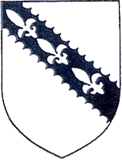
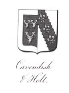

|
|
|
Holt Heraldry
| The coat of arms for the Holt
family have changed over the generations by marriage.
The Holt of Stubley and Holt of Gristlehurst arms are
displayed below. In five direct descents the
Gristlehurst Holt's married into Knightly families.
The coat of arms are described as:-
|
| |
|

|

|
The Holt of Stubley
ARMS Argent, on a bend engrailed Sable three fleurs-de-lys
of the field.
Click here for Robert Holt. Knight. of Stubbeley Halle. Hundersfeld.
Anno Domini. 1472.
|
The Holt of Gristlehurst
ARMS quarterly of five
FIRST argent (AR) on a fesse engrailed sable (S);
three fleurs-de-lis of the field (AR) (HOLT of Stubley)
SECOND argent (A) three boars two and one sable (S)
in the mouth of each a piece of gristle. (GRISTLEHURST)
THIRD argent (AR) a chevron sable (SA) between three
towers gules (G)(ABRAHAM)
FOURTH ermine on a chief indented azure (B); two
lioncels rampant or (OR)
FIFTH vair argent and azure (A)(B); a bend gules (G).
(MANCETTER of Warwick)
|
| |
|

|

|

|

|
Holt of Gristlehurst
Names of Quarterings ( Visitation of Suffolk 1561)
1: Howlte; 2: Gristlehurst; 3: Sumpter; 4: Brockhole; 5: Roos; 6: unknown; 7: unknown; 8: Howlte
|
Chadwick including Holt quarterings 1808
27. Holt of Shevington and Ince, co. Lancaster, argent, on a bend engrailed
sable 3 Fleurs-de-lis of the first
28. Gristlehurst of Gristlehurst co. Lnacaster, argent 3 boars statant
gristles in their mouths, all sable
29. Sumpter of Colchester co. Essex,. argent, a chevron, sable ent, 3 towers
triple-towered gules.
30. Brockhole of Great Stamford co. Essex, or, a chevron ent. 10 cross-crosslets gules
31. Mancester of Mancester co. Warwick vairic a bend gules
32. Roos of Radwinter and Asheldam co. Essex argent 3 water bougets gules
33. Albini Baron of Belvoir co. Leicester, argent 2 chevronels gules a
file of 3 points azure
34. Asheldam of Asheldam co. Essex ermine on a chief indented azure 3
lions ramparts or
|
| |

|

|
The Visitation of London 1633-4 Candleweeke Streete Ward
Holt one of the Judges of the Common Pleas
|
The Visitation of London 1633-4 Langborne Guard
William Holt of Grislehurst, Edward Holt of Cople and
Alexander Holt of London Goldsmith
|
| |
| Lee's Heraldica Lancastria original arms
manuscript
|
| |
| The Right Honourable Robert Durning Holt, 1893
arms.
|
|

|
| |
|

|
|

|
| |
| |
|
| |
| |
|
| Copyright © 2008. Victoria Holt. All rights reserved.
Contact Us | Site Map | Accessability |
|
|
|